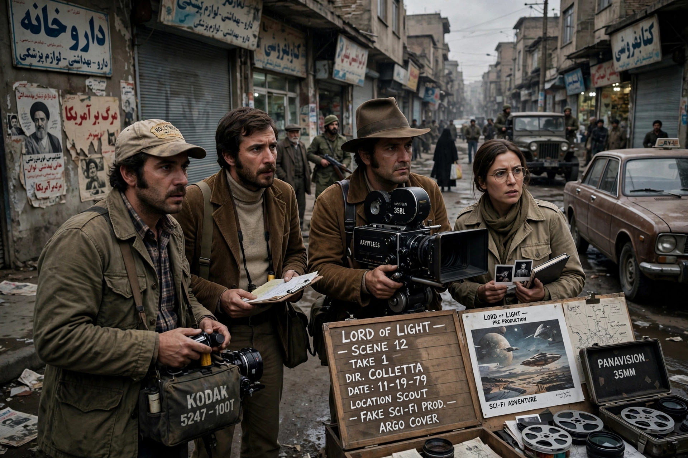

Argo is a 2012 American historical drama thriller film directed, produced by and starring Ben Affleck. It dramatises the "Canadian Caper": the CIA-led rescue of six US diplomats from Tehran during the 1979–81 Iran hostage crisis, posing as a film crew scouting locations for a fake science-fiction film called Argo.

| Argo | |
|---|---|
| Director | Ben Affleck |
| Screenplay | Chris Terrio |
| Starring | Ben Affleck, Bryan Cranston, Alan Arkin, John Goodman |
| Release | 2012 |
| Box office | About $232 million worldwide |
After militants seize the US Embassy in Tehran in November 1979, six staff escape to the Canadian ambassador's residence. CIA exfiltration specialist Tony Mendez (Affleck) devises a cover: the six are Canadian filmmakers scouting for a Star Wars-style epic. With Hollywood producer Lester Siegel (Arkin) and makeup artist John Chambers (Goodman), he creates a studio, script and publicity, flies to Tehran, and escorts the group through airport security to a Swissair flight.
The film was widely praised and won three Academy Awards, including Best Picture, Best Adapted Screenplay and Best Film Editing, from seven nominations. Historians noted it minimised Canada's central role and heightened the airport climax, prompting Affleck to amend a postscript.